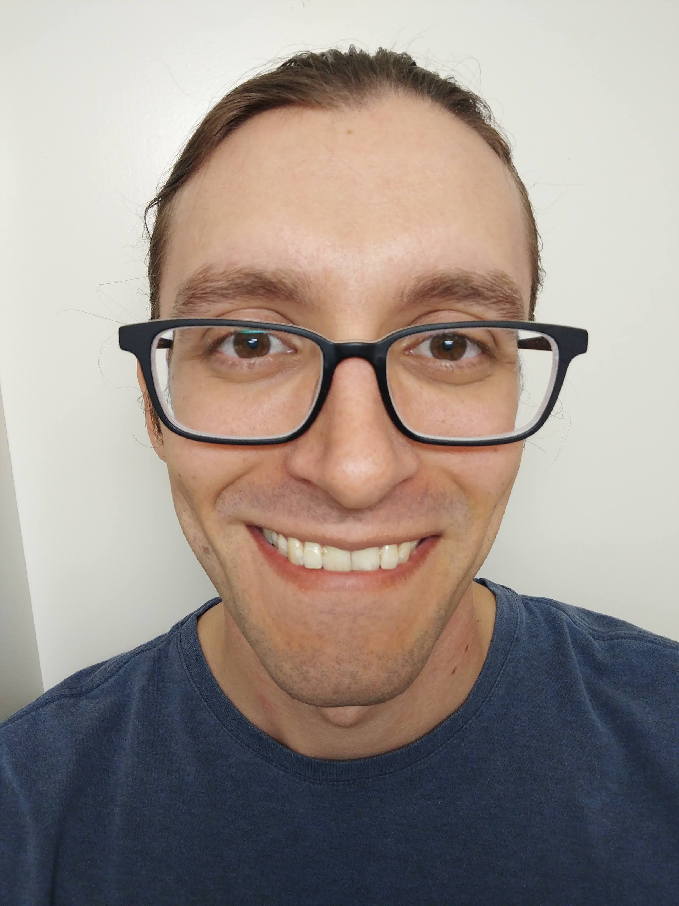

2022 – present
PhD in Informatics, Università della Svizzera italiana, Lugano, Switzerland
Thesis: Equational theories for quantum circuits, with application to circuit optimization. Supervisor: Prof. Stefan Wolf.
PhD student in Quantum Computing

I am a PhD student in the Cryptography and Quantum Information group at the Università della Svizzera italiana, under the supervision of Stefan Wolf. My research focuses on developing mathematical frameworks for manipulating quantum circuits via local circuit equivalences. I am motivated by improving the suite of local circuit optimization techniques employed by quantum compilers, variously called peephole optimizations or template optimizations.
I expect to defend my thesis in August 2026. I am currently looking for work starting from September 2026. My ideal position would be to join the compiler team in a quantum computing company, though I am open to similar postdoc positions. I have a preference for institutions that are developing their own hardware, and for working environments that are highly collaborative, friendly, and results-driven.
PhD in Informatics, Università della Svizzera italiana, Lugano, Switzerland
Thesis: Equational theories for quantum circuits, with application to circuit optimization. Supervisor: Prof. Stefan Wolf.
MSc in Artifical Intelligence, Università della Svizzera italiana, Lugano, Switzerland
Thesis: Geometry of quantum state space: an investigation by convexity and unitary orbits. Supervisor: Prof. Stefan Wolf.
BSc in Physics and Mathematics, University of Massachusetts Amherst, Amherst, MA, USA
W. Schober and S. Wesley. A New Method For Manipulating Circuits, Application To Quantum Adders.
arXiv
W. Schober and S. Wesley. A Complete Equational Theory for Quantum Circuits with Generalized Control. Electronic Proceedings in Theoretical Computer Science 456, pp. 283-349.
Best Student Paper Award at the 23rd International Conference on Quantum Physics and Logic (QPL 2026).
arXiv DOI
W. Schober. Extended Quantum Circuit Diagrams. arXiv
Title of your talk. Invited talk, Conference or Seminar Name, City.
Title of your talk. Contributed talk, Workshop Name, City.
Title of your poster. Poster presentation, Conference Name, City.
Teaching assistant, Quantum Mechanics II, University Name
Ran weekly exercise sessions for about 80 students and helped write the exam.
Co-supervisor, MSc thesis of Name Surname, University Name